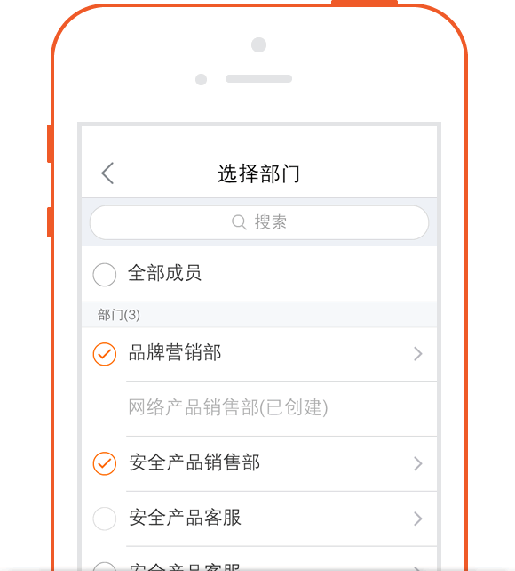
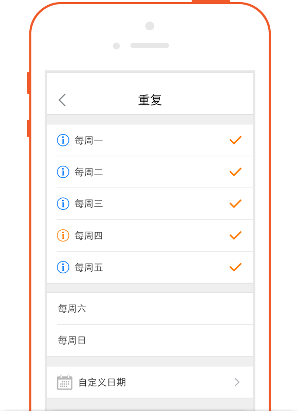

怎么使用销售线索
-
一,销售销售-新增
-
进入“CRM-销售线索”点击界面右上角的“＋”号，可选择名片扫描和手工输入两种方式新增
-
选择名片扫描，即直接通过拍照名片的方式获取各字段的值
-
选择手工输入方式，可直接手动维护各字段的值，维护好后点保存即可；也可通过添加名片（此时可直接拍照也可在相册中选择照片）的方式获取到各字段的值。

-
二,销售线索-转移
-
当员工由于手上销售线索过多、即将休假等导致无法继续负责该销售线索时，可把该销售线索转移给其他同事。
-
进入到该销售线索详细界面，点击右上角“...”，接着点击“转移给他人”，选择你需要转移的人员即可把销售线索转移给他人负责。转移成功后，该销售线索就不会显示在“我负责的销售线索”界面。
-
三,销售线索-跟进任务
-
可以根据销售线索的具体情况，给相关员工安排任务。（比如，通过举办活动发现了一销售线索，安排销售员电话联系跟进下具体情况）
-
进入到该市场活动详细界面，点击“任务”按钮，进入到我的任务界面，点击界面右上角的“＋”号，可为自己安排任务也可为别人创建任务，负责人字段选择自己时，即为自己安排任务，负责人选择别人时，即为别人创建任务。

-
四,销售线索-转换为客户